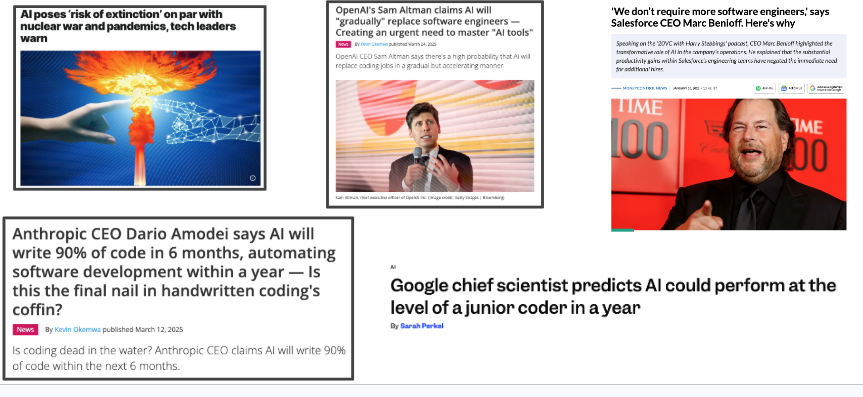

Apresentação da Disciplina
Sumário
Ao final dessa aula, o aluno deve ser capaz de entender do que (e do que não) se trata a disciplina, e entender o modus operandi da disciplina, incluindo atividades e avaliações.
Preâmbulo
Sobre o público-alvo. Neste momento, a disciplina foi pensada e será conduzida para alunos do final do curso de Ciência da Computação da UFCG. Isso significa que o público-alvo já é maduro em relação aos conceitos e ferramental de desenvolvimento de software. Formalmente, estamos falando de IA e Engenharia de Software como pré-requisitos.
Sobre as notas de aula. i) foram escritas por mim em sua totalidade. Não utilizei auxílio de nenhum modelo, embora não veja problema nesse auxílio. Estou deixando isso claro para que você tenha ciência de que, se houver erro aqui ou achar o material ruim, a culpa é minha mesmo; e ii) as notas de aula são um guia para a discussão em sala de aula e servem muito pouco como conteúdo para estudo.
Sobre mim. Eu não sou especialista em IA. Meu background é em desenvolvimento de software, sobretudo arquitetura e design. Por que então estou lecionando essa disciplina? Talvez o que me credencie a tocar essa disciplina seja o que tenho feito nos últimos 10 anos: pesquisando sobre a aplicação de modelos em práticas de engenharia de software e desenvolvendo projetos de inovação com foco no uso de inteligência artificial e modelos de linguagem para apoiar atividades de desenvolvimento, testes, manutenção e análise do comportamento de desenvolvedores.
Alguns exemplos do que tenho feito ao longo dos últimos anos envolvendo aplicação de IA:
Período Paleolítico (Classificação)
- Do developers discuss design? Nos primórdios, algoritmos de predição e classificação. Exemplo: estudei discussões de design em projetos do GitHub e, para isso, precisei treinar modelos de classificação para levantar um dataset mais amplo do que o que é factível manualmente.
Idade Média (NLP, Transformers)
- Análise de risco em obras públicas;
- Análise de contratos de compras de medicamentos;
- Avaliação de métodos de similaridade textual no contexto de investigação policial;
- Avaliação do modelo T5 na detecção de bug reports similares.
Idade Moderna (LLM)
- Can LLMs Turn Design Discussions into Architectural Tests? An Empirical Study with Codestral.
- Language Models as Architectural Gatekeepers: Automating Conformance Checking from Natural Language.
- Uma investigação sobre como LLaMA-2 13B revisa código-fonte com ênfase em code smells.
- Benchmark Data Contamination in Underrepresented Languages: A Comprehensive Analysis Using Brazilian Data.
- HuNeBR: A Multitask Benchmark to Evaluate LLMs' Understanding of Northeastern Brazilian Portuguese Humor.
- Evaluating Semantic Caching in Practice: A Study on a LLM-Driven Distributed Application in a Brazilian EdTech.
- Who Is Who in Judo? Role-Aware Detection in Match Video.
- JudgeBench-BR: A Replication and Adaptation of a Multi-Domain Benchmark for Evaluating LLM Judges in Brazilian Portuguese.
- …
Idade Contemporânea (Agentes)
- Detecção automática de code smells em Clojure;
- Refatoração automática de code smells em Clojure.
Não é sobre mim. Esse histórico importa porque representa a evolução de como tratamos ML como meio para tarefas de engenharia de software. Muita gente entrou nessa jornada em pontos diferentes. E muito sistema em produção também.
Do que se trata a disciplina
Modelos de linguagem têm sido usados nos mais diversos contextos. O nosso objetivo nessa disciplina é focar em três questões importantes no contexto específico de tarefas de Engenharia de Software:
- Como estão sendo usados? Isso inclui não somente discussão sobre ferramental, mas também sobre metodologias e padrões de uso. Vamos discutir exemplos da indústria e estudos empíricos.
- Como usar. De forma produtiva e crítica, como um engenheiro de software. Isso significa não somente focar na produtividade, mas também levantar preocupações com o que é gerado pelos modelos, criar mecanismos para controlar a qualidade e a padronização do código, e experimentar mecanismos para compreensão e evolução de código, entre outras preocupações.
- Qual o impacto do uso desses modelos? O impacto é amplo e profundo. Por isso vamos discutir o papel do desenvolvedor nesse contexto, riscos, qualidade, produtividade, custos, ética, entre outras preocupações importantes.
Os objetivos de aprendizagem da disciplina estão detalhados na seção Objetivos da página inicial.
Do que não se trata a disciplina
Não é uma disciplina de vibe coding. Como bem coloca este texto, “agentic engineering” não é o mesmo que “vibe coding”.
Não é uma disciplina de Inteligência Artificial.
Não é uma disciplina para ensinar você detalhadamente sobre o funcionamento das tecnologias que estão sendo aplicadas. Por exemplo, eu vou apresentar o OpenCode e vamos experimentar com ele. Mas os detalhes finos de uso do ferramental não fazem parte do escopo da disciplina. Nós não vamos estudar uma tecnologia específica, mas o conceito que essas tecnologias implementam. Isso não significa que o curso é teórico, mas significa que não vou agir como tutorial de ferramenta.
Não é uma disciplina para discutir qual ambiente de desenvolvimento assistido por IA (e.g. Codex, OpenCode, Claude, Cursor, Co-pilot) é melhor. Também não vou discutir se o ambiente em IDE é melhor que CLI.
Modus operandi da disciplina
Engenharia de Software é sobre produto, pessoas e processo. Nesta disciplina eu foco no produto, nas práticas relacionadas ao desenvolvimento de software. Por isso ela não se chama Engenharia de Software com Agentes.
A disciplina tem um viés prático, mas também vamos ler com profundidade referências importantes da área e ouvir com atenção pessoas influentes, do mundo acadêmico e do mundo corporativo. As fases do curso (contexto, harness e ciclo de desenvolvimento), bem como o método de trabalho e os critérios de avaliação estão detalhados na página inicial.
Discussão inicial: o tom que vamos adotar

O clima em torno de IA e desenvolvimento de software oscila bastante, e rápido:
- 2025 “90% do código será escrito por IA em meses” (Amodei/Anthropic)
- 2025 “IA substituirá engenheiros de software” (Altman/OpenAI)
- 2025 “IA fará o trabalho de engenheiros intermediários” (Zuckerberg/Meta)
- 2025 “Haverá menos pessoas fazendo trabalhos automatizados” (Jassy/Amazon)
- 2026 “As empresas que mais usam IA são as que mais contratam” (Altman)
- 2026 “Não há evidência de perdas de emprego causadas por IA” (Torsten Sløk, economista-chefe da Apollo)
Calma. Ciência como resposta.
O que os pesquisadores e a indústria (séria) têm dito?
The AI-Native Developer | Queue
A IA está deslocando o desenvolvedor de “quem escreve código” para “quem orquestra e verifica”.
Eight Myths on Software Engineering and GenAI - ACM Queue desmonta, entre outros, os seguintes mitos:
- Desenvolvedores passam a maior parte do tempo escrevendo código.
- Escrever código é o gargalo.
- Linhas de código geradas por IA são uma boa métrica.
- IA ajuda igualmente em toda tarefa e todo desenvolvedor.
- IA transforma todo mundo em desenvolvedor 10x.
- Cabe a cada desenvolvedor individualmente fazer a IA funcionar.
- Ferramenta boa é adotada automaticamente.
- Empresas grandes podem ter a velocidade de uma startup com IA.
84% dos devs usam IA, mas a confiança no output está na maior baixa histórica.
AI Where It Matters: Where, Why, and How Developers Want AI Support in Daily Work, survey com 860 desenvolvedores da Microsoft sobre onde, de fato, o desenvolvedor quer IA.
Some thoughts on LLMs and Software Development, de Martin Fowler, traz algumas provocações que vamos revisitar ao longo do curso:
- “Alucinação não é bug, é o produto”. Toda saída de LLM é alucinação, e algumas são úteis.
- “A engenharia de software acaba de conhecer a incerteza”. A analogia com a engenharia estrutural e o fim do determinismo que sempre caracterizou a área.
- “Sim, é uma bolha, mas essa não é a pergunta importante”. O paralelo com as ferrovias e a bolha da internet.
- “Ninguém sabe o futuro da programação, e desconfie de quem diz que sabe”. Sobre juniors, seniors, e a pergunta que ele recusa responder.
Próxima aula
No próximo encontro vou apresentar uma visão geral sobre desenvolvimento de software com agentes e IA generativa. Para isso, vou relembrar o que é LLM, agentes e as atividades de desenvolvimento que vamos focar, entre elas, entendimento, implementação, avaliação, implantação e operação.